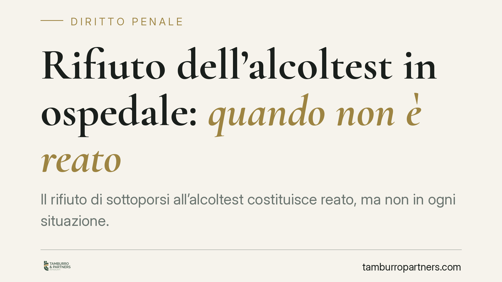

Rifiuto dell'alcoltest in ospedale: quando non è reato
Il rifiuto di sottoporsi all'alcoltest costituisce reato, ma non in ogni situazione. Secondo un recente orientamento della Cassazione penale, quando il conducente è trasportato in ospedale solo in via precauzionale e non riceve cure mediche effettive, può mancare il presupposto dell'accertamento sanitario del tasso alcolemico. Una distinzione che incide direttamente sulla responsabilità penale.

Il caso e perché conta
Il rifiuto di sottoporsi all'accertamento del tasso alcolemico è, di regola, penalmente sanzionato. Ma la configurabilità del reato dipende dal contesto in cui l'accertamento viene richiesto. Un conto è il controllo su strada da parte della polizia giudiziaria; altro è l'accertamento svolto presso una struttura sanitaria, che presuppone condizioni specifiche.
La questione è tutt'altro che teorica: chi viene condotto al pronto soccorso dopo un controllo o un sinistro si trova spesso in una zona grigia. Capire quando il rifiuto integra un reato e quando no è decisivo per valutare la propria posizione.
Inquadramento normativo
La disciplina di riferimento è l'art. 186 del Codice della strada (D.Lgs. 285/1992).
Il comma 5 prevede che, quando il conducente è coinvolto in incidenti stradali o comunque sottoposto a cure mediche, l'accertamento del tasso alcolemico possa essere effettuato, su richiesta degli organi di polizia stradale, da parte delle strutture sanitarie di base o di quelle accreditate, mediante prelievo sui campioni biologici. In questa ipotesi l'accertamento si innesta sull'attività di cura già in corso.
Il comma 7 stabilisce invece che il conducente che rifiuta di sottoporsi all'accertamento è punito con le pene previste per la fattispecie più grave (guida con tasso superiore a 1,5 g/l), salvo che il fatto costituisca più grave reato.
Il punto critico riguarda il collegamento tra i due commi. L'accertamento sanitario del comma 5 presuppone, secondo la lettera della norma, che il conducente sia sottoposto a cure mediche. Se il trasporto in ospedale è meramente precauzionale e non si traduce in un'effettiva attività terapeutica, il presupposto dell'accertamento ex comma 5 può venire meno, con conseguenze sulla rilevanza penale del rifiuto.
> Nota di metodo: il numero e l'anno della pronuncia richiamata nelle cronache (indicata come Cass. pen. n. 10784/2026) non sono allo stato riscontrabili e vanno considerati da verificare. Riportiamo pertanto il principio come orientamento, senza attribuirlo a una massima non confermata.
Implicazioni pratiche
Per il conducente, la differenza è sostanziale. Due profili vanno tenuti distinti:
- Accertamento su strada. Il rifiuto dell'etilometro richiesto dagli agenti durante un controllo integra, in linea di principio, il reato di cui al comma 7.
- Accertamento in ambito sanitario. Qui la configurabilità del reato è legata ai presupposti del comma 5. Se non vi è stata un'effettiva sottoposizione a cure mediche, ma solo un accesso precauzionale alla struttura, può mancare la base normativa per qualificare il rifiuto come reato.
Un aspetto va sottolineato: l'onere della prova grava sull'accusa. Spetta al Pubblico Ministero dimostrare la sussistenza dei presupposti dell'accertamento e la volontarietà del rifiuto. La valutazione, inoltre, è fortemente ancorata ai fatti del singolo caso: l'effettività delle cure, la natura del trasporto, le circostanze del controllo sono elementi di merito da ricostruire con precisione.
Non si tratta, dunque, di una regola automatica. L'esito dipende dalla ricostruzione concreta della vicenda, documenti sanitari alla mano.
Cosa fare in concreto
- Conserva ogni documento clinico. Verbale di triage, referto, cartella del pronto soccorso: servono a dimostrare se vi siano state o meno cure mediche effettive.
- Ricostruisci la sequenza degli eventi. Annota con esattezza se il trasporto in ospedale sia stato precauzionale o conseguente a un sinistro con lesioni.
- Verifica le modalità della richiesta di accertamento. Chi l'ha richiesta, in quale contesto e con quali avvertimenti (ad esempio, l'avviso della facoltà di farsi assistere da un difensore).
- Non dare per scontata la fondatezza dell'imputazione. La qualificazione del rifiuto come reato dipende dai presupposti normativi, che vanno sempre riscontrati.
- Valuta con un legale la propria posizione prima di qualunque dichiarazione, per impostare correttamente la linea difensiva sin dalle prime fasi.
In sintesi
Il rifiuto dell'alcoltest non è reato in assoluto: dipende dal contesto e dai presupposti di legge. In ambito sanitario, l'assenza di cure mediche effettive è un elemento che incide sulla configurabilità dell'illecito. La valutazione resta strettamente fattuale e l'onere probatorio è a carico dell'accusa.
---
Contributo informativo a cura di Tamburro & Partners Avvocati – Avv. Giuseppe Tamburro. Non costituisce parere legale.
Ogni condominio ha una storia a sé.
Se gestisci un'amministrazione e vuoi un confronto su una specifica questione condominiale, scrivi allo studio. Ti rispondiamo entro un giorno lavorativo.